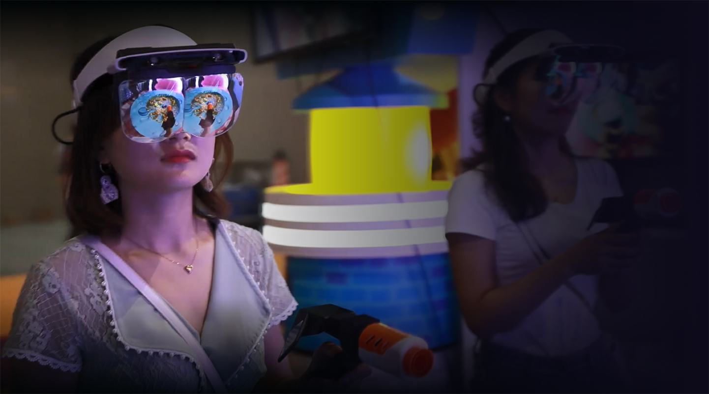

2019.8.2
亮相China Joy Ximmerse MR线下娱乐引爆玩家热情
您的位置： 最新新闻/详情
本届China Joy现场，Ximmerse（中文名称：广东虚拟现实科技有限公司）全方位展示了今年6月份刚刚推出的Rhino X一体机交互系统，以及基于该系统研发的多款MR线下一体化娱乐方案，游戏内容包括MR全息射击游戏、MR梦幻海洋世界等。其中，MR全息射击游戏是一款专业的射击游戏，基于MR交互技术，首次将传统的射击训练与科技无缝结合，如同为玩家们构建了一个丰富逼真的虚拟训练场。由于这款游戏本身非常明显的竞技性、以及主办方现场发起的“MR专业射手挑战赛”游戏规则的设置，受到最多玩家欢迎。展会期间，共有近千名玩家现场挑战这款游戏。
另一款受欢迎的《MR梦幻海洋世界》则以海中探索为主题，带领玩家探索美丽的海洋生机，游戏中动听的音乐和旁白，像娓娓道来的海底故事，寓教于乐，在感受海底世界的同时，充分感受到混合现实技术的魅力。游戏本身的交互外，增加了更多VR/AR游戏里无法实现的游戏体验，例如玩家们可以在场景中真实交流，或充分沉浸在MR技术构筑的混合现实的环境里。

本届China Joy现场，Ximmerse（中文名称：广东虚拟现实科技有限公司）全方位展示了今年6月份刚刚推出的Rhino X一体机交互系统，以及基于该系统研发的多款MR线下一体化娱乐方案，游戏内容包括MR全息射击游戏、MR梦幻海洋世界等。其中，MR全息射击游戏是一款专业的射击游戏，基于MR交互技术，首次将传统的射击训练与科技无缝结合，如同为玩家们构建了一个丰富逼真的虚拟训练场。由于这款游戏本身非常明显的竞技性、以及主办方现场发起的“MR专业射手挑战赛”游戏规则的设置，受到最多玩家欢迎。展会期间，共有近千名玩家现场挑战这款游戏。
另一款受欢迎的《MR梦幻海洋世界》则以海中探索为主题，带领玩家探索美丽的海洋生机，游戏中动听的音乐和旁白，像娓娓道来的海底故事，寓教于乐，在感受海底世界的同时，充分感受到混合现实技术的魅力。游戏本身的交互外，增加了更多VR/AR游戏里无法实现的游戏体验，例如玩家们可以在场景中真实交流，或充分沉浸在MR技术构筑的混合现实的环境里。